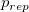

| 心理学の再現可能性 |
| 心理学の再現可能性 |
Open Science Collaboration (2015) 心理学研究の再現可能性
Gilbert et al. (2016) 上記への反論
Wasserstein & Lazar (2016) ASAによる 値に対する見解
値に対する見解
Simmons, Nelson, & Simonsohn (2011) hacking
Murayama, Pekrun, & Fiedler (2014)
Wetzels et al. (2011); 波多野・吉田・岡田 (2015) 効果量と値の関係
Masicampo & Lalande (2012) 値のスパイク状の増加
Altman et al. (2013) 正確度分析
Anderson & Maxwell (2016) 結果の再現性に対する定義
Makel & Plucker (2014) 教育実践研究における追試の少なさ、他グループの追試の成功率の低さ
 と再現可能性
検定力分析、正確度分析と再現可能性
交差妥当化による再現可能性のチェック
有意差がないという結果も事実ではあるのだから、事前登録制度の導入やデータ公開1はお蔵入り問題を避けるためにも極めて重要である
追試に対するインセンティブを高めるために、追試指数を導入したり、追試専用のジャーナルやセクションを設ける2ことも重要だろう
高度な知識や技能が要求されるようになった今、研究を各専門家で分担すること3も有用だと考えられる
心理学研究におけるデータはデモンストレーションとして機能してきた4という主張は確かに同意できる
何をもって再現できたとするのか？5
再現可能性は何%であれば十分なのか？（40%は低すぎるのか？）6
再現可能であった論文の中にも、偽陽性（再現できないはずなのにできてしまった）ものが含まれているはず
そもそも「統計的有意性」自体が大した情報をもたらさないのであるから、それが繰り返されるかどうかを持って再現可能かどうかとするのは意味がないように思える。
hackingやHARKing、偽発見率など、基本的には偽陽性を問題としているようだ。
しかし、帰無仮説が真であることは実質的にあり得ないのだから、偽陽性よりも偽陰性の方が問題なのではないか？9
また、偽陽性は出版され追試が失敗することで、それが偽陽性だということが明らかになる。 一方で、偽陰性はお蔵入りになる可能性が高く、そもそも追試の対象にすらならない。
あるいは、真偽ではなく「尤もらしさ」を議論するということであれば、QRPsによって「尤もらしさ」が意図的無意図的に左右されていると考える方がよい。
本来ないはずの効果をQRPsによって無理矢理引き出す
（予知能力の存在、血液型と性格の関連）
大きすぎる標本、検定の繰り返しによってたまたま有意となったものが報告された
→ 偶然得られたものであれば、追試は（正しく）失敗する可能性が高い
標本の系統的偏りや妥当性の低い測度、独立性からの逸脱の無視、層別相関などによって見いだされた
→ 直接的追試では、同じ分析上の誤りを犯すことで、（誤って）成功するかもしれない
本来あるはずの効果が信頼性の低い測度、検定力不足によって見いだせない
（非認知的能力と認知的能力の関係、心理療法の効果の差）
効果があることを主張したく、またそれがインパクトを持つなら、そもそも（有意でないという意味で）正しい結果であっても、研究として世に出ていない
→ 追試の対象とならない（まずは元研究の検定力を挙げよ）or なったとしても、（誤って）有意差なしとなる
等価であることを主張したく、検定力不足によって（有意差なしという意味で）誤った結論になった
→ 直接的追試であれば、同じく検定力不足によって（誤って）有意差なしとなり、その意味で成功するだろう
以下の表に示すように、元論文の結果が偽陽性もしくは偽陰性である場合、そもそも元論文の結果が再現されること自体が誤りである。 再現可能性が高いことが望ましいのは、元研究が真陽性・真陰性の場合のみであり、そうかどうかは誰もわからない。
追試 |
||
元研究 |
陽性 |
陰性 |
偽陽性 |
元研究の結果が系統的誤差由来 |
元研究の結果が偶然誤差由来 |
再現はできるが誤った結果 |
再現はできないが正しい結果 |
|
（※陰性であることが仮説でないとそもそも公表されない） |
||
偽陰性 |
追試の検定力が高い |
追試の検定力が低い |
再現できないが正しい結果 |
再現できているが誤った結果 |
|
再現性には2つの側面がある
偽陽性・偽陰性の論文がたくさん存在し、追試が再現されないことによってそれを正しく見ぬいている
元研究と同じ系統的誤差、低い検定力の追試が行われれば、結果が再現できたとしてもそれは誤りである
つまり、再現性の高さ自体を目的視することは渡邊 (2016) の述べるように危険である。
偽陽性・偽陰性の論文が多いこと自体は問題であったとしても、結果が再現できないことによって偽であることが明らかになるのは、コミュニティ全体としては健全。
直接的追試によって明らかになるのは、元研究が偶然誤差由来で偽陽性となっていたことというくらいであろう。
データを見てから仮説を構成することが誤りであるのであれば、適合度指標を用いたモデルの比較や探索は誤りと言うことになるのか？
正の相関関係を予想していて曲線的な相関が得られた場合、適切な手法で曲線性を示すことは好ましくないことなのか？10
池田・平石 (2016) の言うように心理学の理論が「弱い」もので、仮説がどうとでも立てられそうなものであるとするならば、データにモデルを当てはめる「記述」がむしろ適切な方法ではないのか？11
三中 (2016) の指摘するように科学がアブダクションによって進み、仮説は常に更新され続けるのであれば、データに仮説を適合させることは悪いことではないのではないか？
そもそも、心理学の仮説はただちに、そして常に、真偽が定まるようなものではないはず。 目の前の現象（データ）をよりムリなく説明するものが理論であり、モデルである。
Footnotes
| 心理学の再現可能性 |